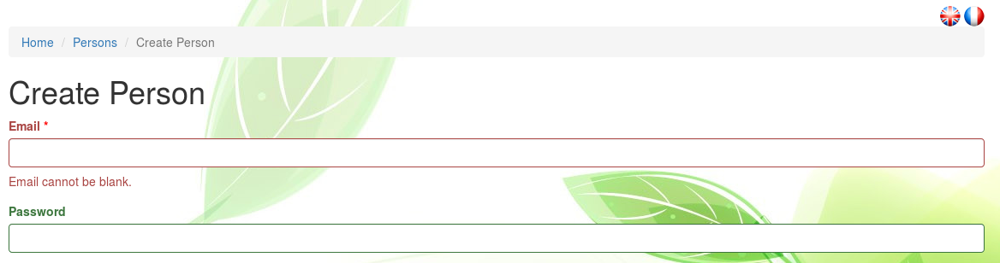
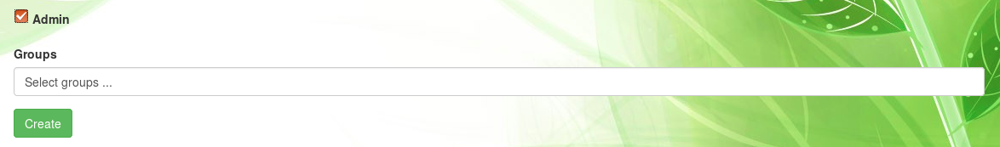
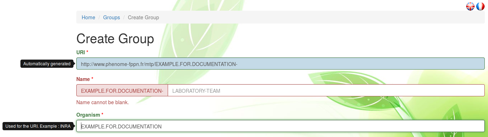
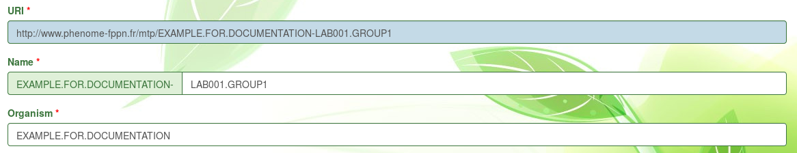

Community
Persons
Persons properties
Phis community is composed of persons which can be either:
- persons uniquely identified by their email. Persons have to be created within Phis before being refered to within projects and expertiments.
- users, term refering to persons linked to a Phis account: they are provided with a password that they can change at any time. Phis users are either classic users or administrators (admin).
Create a person
Within the Persons menu, a user can create a new person with the
Create Person button displayed at the top left of the persons list.
The mandatory fields, followed by a red asterisk, are:
- Affiliation
This section provides information on how to create a person, which can be either a person not related to a Phis account, either a new Phis user.
Only administrators can create a user from Phis.
Three fields from the Create Person page are visible only to admin users:
- Password
- Admin
- Groups
Those field are highlighted below with the (Admin only) tag.
if the field Password remains empty, a person without a Phis account is created.
Otherwise, a Phis user is created.

At any time, a person without an account can be changed into a user by an administrator modifying its Password field after clicking on the Update button above its information sheet.
Email. The email address used to uniquely identify a person.
In the case of a person that is also a Phis user, the email provided is used as username.
For now, the email provided does not necessarily have to be an existing email address: there's no check or email confirmation asked for.
Password (Admin only).
If this field is left blank, a person without a Phis account is created, otherwise a user is created.
The new user is provided with a potentially temporary password which can be modified.
First Name. Given Name (Forename) of the person.
Family Name. Surname (Last Name) of the person.
Phone. Office phone number, preceded by the country phone prefix.
Address. Office postal address.
No specific format is required in this field.
ORCID. Open Researcher and Contributor ID.
You can create and get your own ORCID at orcid.org.
Admin (Admin only).
If this box is ticked, the new user is given admin rights.
In the case of a non-user person creation, ticking this box has no effect until the accountless person is transformed into a user by being provided a password.

Groups (Admin only).
Names of the Phis groups in which the new person will be included.
This field in the user creation is crucial, but can also be modified at a later time.
Groups are selected from a the predefined list of groups found in Phis.
Moreover, when a new group is created, an existing person can be added to it from the Group Creation page.
Manage a user account
From the Persons menu, a user can manage its own account after clicking on the eye icon on the right of its name in order to view its personal information sheet.
Both public information and password can be changed after clicking on the Update button.
Get an access to Phis
For those that do not own a Phis account, they can ask a account to be created by either :
- a Phis user diplaying administrator rights
- a Phis manager (see README.md for Phis managers contact)
Access rights
Users levels of access
User access rights depend on users groups.
Classic: a classic user gets access to public data and data accessible to the groups the user belongs to.
Admin: on top of the guest user access rights, an admin can create or delete user accounts.
An admin can also create groups and assign users to those groups.
An admin are usually platform or installation managers, as well as data managers.
There is generally no more than one or two admin per platform.
Restrictions to a group
A given information can be visible to specific groups. A Phis user not belonging to those groups will not be able to view the data linked to them. The concepts that can be assigned to groups are experiments and the scientific objects it contains. Currently, access rights are managed by experiment.
Public data
An information assigned to no group is by default set as public. For instance, an experiment not belonging to any group will be viewable to every Phis user, e.g. to every person owning a Phis account. Research data requiring authrorizations to be accessed to could become public data after several years. to confirm
Groups levels of access
Guest: members of a guest group can visualize the data linked to this guest group.
Owner: in addition to the visualization rights given to guest groups members, owner groups members can modify the data belonging to the group.
Groups
Groups properties
Only admin-users are able to view the list of user groups within the Tools > Groups menu, not visible from a guest user account.
For instance, the public account guestphis has no access to this menu.
From the Tools > Groups menu, admin-users get an overview the main properties of all users groups:
- the group URI (standardized, unique and persistent)
- the group name
- the group level of access (guest or owner), cf. Access rights
From Home / Groups, admin-users can click on the eye icon on the right of a given group in order to view its information sheet. The additional information provided by the group sheet are a short description and the persons included in the group, identified by their email address.
Groups metadata can be modified with the Update button by the admin-users.
Create a group (admins only)
Within the Groups menu, one can create a new one with the
Create Group button.
URI. The group URI is automatically created by Phis web service which uses the Name of the group provided by the user.
Organism. Name of the organism employing the group members.
If a group includes persons from various organisms, instead of an organism name, a project name, or else, can be provided.
No spaces or hyphen are accepted: they are automatically replaced by dots.
The group Organism is automatically formatted in capital letters.

Name. Group name composed of an Organism name and additional information on the group (e.g. laboratory and team) provided by the user.
No spaces or hyphen are accepted: they are automatically replaced by dots.
The group Name is automatically created in capital letters.

Once the group created, its URI, Name and Organism name can no longer be modified.
Level. Group's level of access to the experiments it will be involved in: guest or owner.
A scientific supervisor can consider creating two distinct groups acceding to the same experiments : an owner group that includes the few users susceptible to add and modify experimental data and persons accessing it, and a guest group of persons not involved in the data production, but provided with an access to the data.
Description. Complete plain text description of the user group, preferably provided in English language.
Members. Email of the Phis persons that will be part of the new group.
This field in the group creation is crucial, but can also be modified at a later time.
Persons are selected from a predefined list of the email identifiying them in Phis.
Note that even persons without an account (persons that are not users) can be added to the new group.
Completing the group creation within Phis is then achieved by clicking on the Create button.